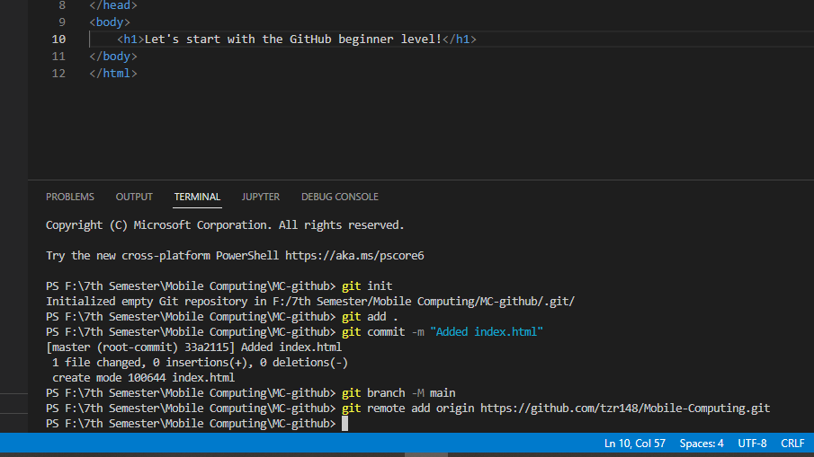
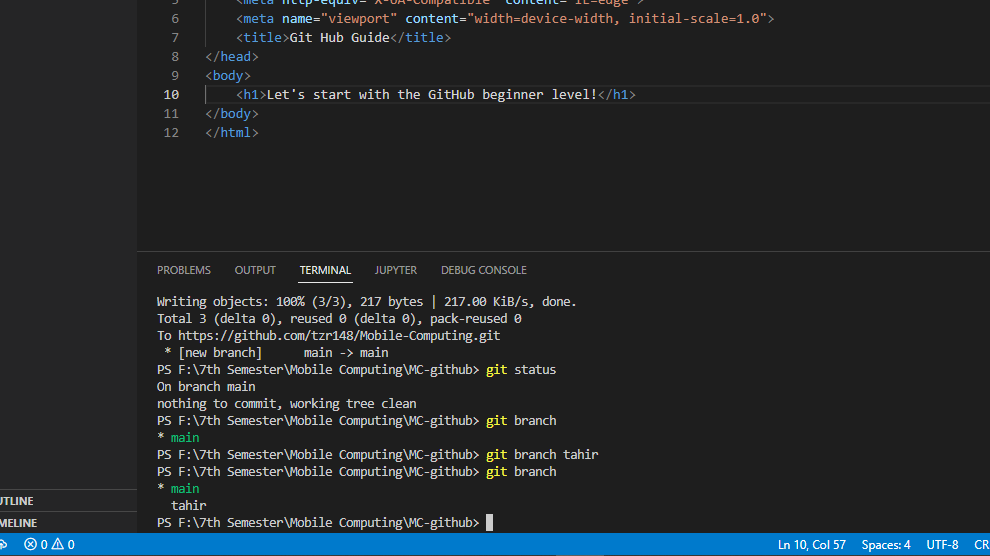

Let's start with the GitHub beginner level!
Making Repository
- Here is the following instructions for making a repository.
- Open repositories page of your GitHub Account.
- Create new repository by a name that is available.
- Make the repository private if it needs to be private.

VS Code to GitHub
- These are the commands to push a visual studio code project to github.
- Listed are the commands in picture as a help that needs to be executed one by one.
- Open a Folder in Visual Studio to associate it with GitHub.
- git init command to initialize and make a git file associated with that folder.
- git add . to add all files to the staging area.
- git commit -m "Added index.html" is to commit files to the local repository.
- git branch -M main is renaming the branch from master to main.
- git remote add origin https://github.com/tzr148/Mobile-Computing.git is adding origin to remote directory.
- git push -u origin main is pushing all the data from local repository to remote repository.
- Our Project is active on our respective github link.
- Here is the git status command to view the git status.

Branching Concept
- Below are the some instructions related to branching concept in GIT.
- git branch is the command to list all branches.
- git branch tahir is used to make a new branch named tahir.
- git checkout tahir is to switch to the branch named tahir.
- Add and Commit command after some changes to make it to local repository.
- git checkout main is to switch to the branch named main.
- git merge tahir is used to merge the current branch with the branch named tahir.
- git branch -D tahir is to delete the branch named tahir.
- git branch is to list all branches, and only main branch exist after deleting the branch tahir.

git pull command
- Here are few instructions about git pull command in GIT.
- Code of the file index.html before making changes from the website in github.
- Adding commit while editing in github account to index.html.
- Code of the file index.html after making changes from the website in github.
- git pull command is used to pull all the files from remote repository to local repository.
Cloning Concept
- Following are instructions about Cloning commands in GIT.
- Open a Folder in Visual Studio as Clone Test for cloning from github to it.
- Copy the HTTPS link from github repository.
- git init is to initialize as told above and git clone https://github.com/tzr148/Mobile-Computing.git command is to clone the whole repository in current folder and the project we want to be clone is Cloned.